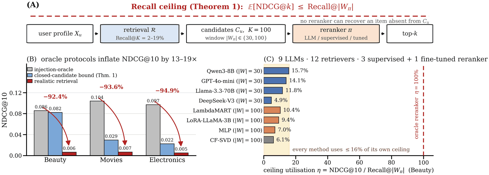

Some LLM recommendation rerankers are evaluated under an oracle protocol that guarantees the ground-truth item is in the scored set. That protocol measures something real. It does not measure deployment performance, because the quantity it holds fixed is the one that binds in production.
Under realistic retrieval, none of the seventeen optimisation strategies tested here — prompt design, a 168× model-scaling range, test-time reasoning, three supervised rerankers under a disjoint train/eval split, a LoRA-fine-tuned LLaMA-3B, score-aware prompting, LLM+CF fusion, sequential models, larger candidate budgets, hybrid text retrieval — produces a statistically significant gain over a $0.00 collaborative-filtering baseline on the primary Amazon datasets.
The cause is combinatorial, not a modelling failure, and it can be written down.
Theorem 1
What a reranker cannot do
A reranker that outputs a permutation of a retrieved candidate set can never place an item the retriever missed.
For any closed-candidate reranker π with reranking window Wπ, under leave-one-out evaluation. The general form covers every top-k metric with a non-increasing positional discount — NDCG, Hit, MAP, Recall, RBP, ERR — through a single rearrangement-inequality argument rather than a per-metric case analysis.
Two consequences do the work. First, the bound is numerical: on Amazon Movies, where CF-SVD reaches Recall@100 = 2.95%, no closed-candidate reranker can exceed NDCG@10 = 0.0295 — zero-shot LLM, fine-tuned model, or a perfect oracle over the retrieved set. Second, the binding quantity is |Wπ|, not K: a listwise LLM prompt shown 30 of the 100 candidates is accountable to Recall@30, not Recall@100. Scoring it against the wrong denominator understates its ceiling utilisation by about 2.6×.
We claim no surprise in the statement — that a reranker cannot recover an unretrieved item is intuitive. What the formalisation buys is the exact number a measured NDCG must be read against, and the utilisation ratio η that separates a retrieval failure from a reranking failure.

Interactive · RAEP component 1
Diagnose your own setup
Before comparing rerankers, measure the retrieval recall that bounds them. Enter yours — the ceiling, the regime, and the fraction of it you are using follow deterministically.
|W| is your reranker’s own window — the number of candidates it actually scores, which for a listwise LLM prompt is usually smaller than K. Regime thresholds and the utilisation ratio are RAEP components 1 and 3.
Both axes are logarithmic, which makes the bound a 45° line and the vertical gap up to it exactly log(1/η). Blue points are this paper’s measured operating points (CF-SVD retrieval, n=500, K=100); every one sits about a decade below the line. Moving a point right is a retrieval improvement and raises the ceiling. Moving it up is a reranking improvement and consumes headroom that already exists. Seventeen attempts at the second are catalogued below.
RQ3 & RQ4
Seventeen ways we tried to break it
Each row removes one candidate explanation for the failure: prompt design, model capacity, test-time reasoning, supervised training signal, structured CF features, temporal modelling, candidate budget.
Read the sign carefully
Four strategies came out ahead of CF. None of them is statistically significant. Every result that is significant is a loss. The claim of this paper is the weaker and more defensible one — no significant improvement over CF under realistic retrieval — not that every method is worse.
The strongest single piece of evidence is the convergence: 4B to 671B parameters, three supervised architectures, a fine-tuned LLM, and the CF baseline itself all land in a statistically indistinguishable band, and all of them use under 16% of their own ceiling.
Two results deserve singling out. Test-time reasoning strictly hurts. DeepSeek-V4-Pro with thinking enabled scores 43% below CF on Movies (p = .004) at roughly 37× the cost of the same model without it — $4.75 versus $0.13 per 500 users, and 200–500 s versus under 1 s per user. Reasoning chains have nothing to operate on when the relevant item is absent from the candidate set.
Giving the LLM the CF scores helps, for the wrong reason. Annotating each candidate with its CF rank, normalised score and popularity percentile improves every dataset — and raises Kendall’s τ against the CF order every time. The model gets better by overriding CF less. An LLM+CF blend with λ tuned on the evaluation users themselves — an upper bound, not a held-out result — recovers exactly CF and no more.
Reliability
Three things to know before reading the numbers
Each of these is a limitation we found ourselves and kept in the repository on purpose.
One earlier result in this line of work was retracted
An earlier version reported p < 0.0001 gains for LambdaMART above 8.8% recall, and framed it as a recall threshold. The training and evaluation user pools overlapped, so each user’s test item was simultaneously a supervision label and an evaluation target. Under any non-leaky split the effect disappears; the “8.8% boundary” framing does not survive and is not retained. cikm_diagnose_lambdamart_leak.py reproduces the leak, cikm_neural_rerankers_disjoint.py is the corrected protocol — 250 training users disjoint from the 500 evaluation users.
The listwise LLM prompts see 30 candidates, not 100
Retrieval always returns K = 100, but the listwise prompt shows the top-30 CF candidates and appends positions 31–100 below the model’s output in CF order. Pointwise rerankers score all 100. η is therefore computed against each method’s own window; an earlier version scored the LLMs against Recall@100 and understated their utilisation by ≈2.6×.
Amazon Electronics has no item text
All 29,905 items in the sampled subset carry title: null and text: null, which is why the plain-prompt Kendall’s τ against the CF order is exactly 1.000. Electronics remains a valid test for retrieval and for CF-embedding rerankers, but its LLM columns are a null control, not a measurement of semantic reranking.
Where the ceiling binds
Eight datasets, three domains
Recall falls broadly with catalog scale; density is the stronger descriptive correlate (Pearson r = +0.604 over eight points — a coefficient, not an inferential test). The ceiling bites hardest exactly where recommendation matters most: large, diverse catalogs.
| Dataset | Domain | Catalog | Recall@100 | Zero-recall | RAEP regime |
|---|---|---|---|---|---|
| Amazon Electronics | Products | 28,981 | 2.24% | 97.8% | CRITICAL |
| Amazon Movies | Products | 53,709 | 2.95% | 97.1% | CRITICAL |
| Amazon Toys | Products | 9,545 | 7.0% | — | LOW |
| Amazon Beauty | Products | 1,416 | 8.23% | 91.8% | LOW |
| Amazon Office | Products | 5,037 | 11.4% | — | LOW |
| MIND News | News | 20,212 | 12.0% | 88% | LOW |
| Amazon Sports | Products | 5,246 | 12.8% | — | LOW |
| MovieLens-25M | Movies | 19,886 | 18.9% | — | MODERATE |
Recall@100 under CF-SVD. MovieLens-25M is 18.9% on the n=1,000 RAEP diagnostic sample and 17.4% on the n=500 LLM-evaluation sample. Even at the top of this range, all five cloud LLMs score below the CF baseline.
The one escape route
Generative retrieval, not better reranking
Theorem 1 constrains closed-candidate rerankers. Three directions could break the ceiling; only one breaks that assumption. Better retrieval — multi-source fusion at K = 3,000 reaches 30% recall on Beauty at 30× the candidate budget — raises the ceiling but stays inside the same combinatorial constraint. Richer metadata improves η, not the ceiling. Generative retrieval — end-to-end token-level item generation, TIGER and GenRec — is the only direction in our taxonomy that lets a model emit items absent from the candidate set. That is the natural follow-up: a head-to-head against the hybrid CF+BM25+Dense baseline at the recall–NDCG operating point identified here.
Scope, stated plainly: our retrievers reach Recall@100 of 2–19%. A production system operating at substantially higher recall sits outside the regime we measured, and the ceiling loosens as recall rises. Our rerankers see CF embeddings, item text, popularity and CF scores — not the dwell-time, context and cross-feature signals an industrial ranker consumes. Offline evaluation cannot observe the online feedback loop. We do not claim the retrieval-first ordering holds beyond those boundaries.
Artifact
Reproduce it
Every number in the paper comes from a JSON file in experiments/logs/, and every one of those files is produced by a script in scripts/. Nothing is hand-entered.
# the datasets under data/processed/ are already preprocessed — no download step git clone https://github.com/GeoffreyWang1117/recall-ceiling-cikm2026 cd recall-ceiling-cikm2026 conda create -n recallceiling python=3.11 && conda activate recallceiling pip install -r requirements.txt # reproduce the ceiling-utilisation numbers — no API calls, ~30 s python scripts/cikm_recompute_eta_windows.py # reproduce Figure 1 from the result JSONs python scripts/make_fig_overview.py
SEED = 42 throughout; every non-API experiment is deterministic. The API drivers checkpoint per user, so an interrupted run resumes without repaying for completed users.
| Paper float | Script | Result file |
|---|---|---|
| Fig. 1 — overview | make_fig_overview.py | cikm_eta_windows.json |
| Tab. 2 — dataset statistics | cikm_dataset_stats.py | cikm_dataset_stats.json |
| Tab. 3 — oracle vs. realistic | kdd_oracle_realistic_n500.py | kdd_oracle_realistic_n500.json |
| Tab. 4 — retrieval sweep | kdd_sota_retrieval_baselines.py, cikm_lightgcn_sweep.py | kdd_sota_retrieval_baselines.json |
| Tab. 5 — all rerankers on Beauty | cikm_recompute_eta_windows.py | cikm_eta_windows.json |
| Tab. 6 — supervised rerankers, 6 datasets | cikm_neural_rerankers_disjoint.py | cikm_neural_rerankers_disjoint.json |
| Tab. 7 — score-aware prompting | cikm_score_aware_prompting.py | cikm_score_aware_prompting.json |
| Tab. 8 — candidate-budget sweep | cikm_k_sensitivity_n500.py | cikm_k_sensitivity_n500.json |
The full map, including the twenty results reported in prose, is in the repository README. Earlier result families (kdd_*, p9_*) are kept so the paper’s self-corrections can be checked against the original runs.
Cite
@inproceedings{wang2026recallceiling,
author = {Wang, Zhaohui},
title = {The Recall Ceiling of {LLM}
Recommendation Reranking},
booktitle = {Proceedings of the 35th ACM
International Conference on
Information and Knowledge
Management (CIKM '26)},
year = {2026},
address = {Rome, Italy},
publisher = {ACM},
doi = {10.1145/3799682.3841132}
}
Licence & contact
Code is MIT. The redistributed datasets under data/processed/ remain under their original terms — Amazon Review Data, MovieLens-25M, MIND.
Questions, replication problems, or a disagreement with the result: open an issue on the repository. A failed replication is the most useful thing anyone could send.
Zhaohui Wang · ORCID 0009-0006-1187-1903